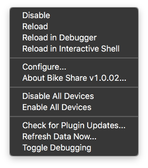

The BikeShare plugin allows users to create Indigo Home Control Server devices representing Bike sharing service locations. Individual devices contain data such as station
location and number of available bikes.
Installation
Bikeshare Plugin Configuration Dialog
Installation is easy. Download and extract the Indigo Plugin file onto your Indigo server machine. Double-click the plugin file and follow the prompts. Presently, the
plugin contains functionality for the following North American bike sharing services:
Aspen - We Cycle
Chattanooga - Bike Chattanooga
Chicago - Divvy Bikes
Columbus - CoGo Bike Share
New York - Citi Bike
San Francisco - Bay Area Bike Share
Toronto - Bike Share Toronto
The plugin supports only one service at a time--but a theoretically unlimited number of stations in that service--and the operation of the plugin is very simple.
Within the plugin preferences, select the bike sharing service that you want to use.
Create a device for the bike station you want to track. There is no limit to the number of station/devices you can have. The station names are automatically picked up
from the service, so they will always be up to date. I have added a device state called "dataAge" which will give some indication of how current the data are.
Bike Share is compatible with local bike sharing services that subscribe to a specific, standard data sharing format (see below). These files are standardized across bike
sharing services and the resulting JSON file always begins with the following code: {"executionTime":"YYYY-MM-DD HH:MM:SS AM/PM","stationBeanList":
If you have a bike sharing service that you want added to the plugin, it must make it's data available in the "stationBeanList" format. To have a service added to the
plugin, just post the url to the BikeShare forum or send it directly to me via private message from the
Indigo website. Here's a sample file.
This plugin is useful for things like:
Triggers: "Alert me when available bikes drops below a threshold."
Control Pages: adding the number of available bikes to a control page.
Devices
There is presently one type of BikeShare device. Each device represents one station within the bike sharing service (stations represent each bike sharing location and docks represent
the bike slots at each station). Configuring devices is very straightforward.
Create a new device and open the Edit Device Settings window (this may take a moment to load depending on the number of stations available within the service.
Select the station from the list of available stations.
That's it! The next time the plugin refreshes, information about the station will be available throughout Indigo.
Actions
There is presently one action available.
Create a new Indigo Action within Indigo, select Bikeshare Action, and then select Refresh Bike Data. Whenever the action is fired, Indigo will ask the plugin to download the
most current information for all Bikeshare stations.
Menu Items
Bikeshare Plugin Menu Items

There are a few custom menu items for the Thingspeak plugin:
Enable/Disable All Devices — These two menus items can be used to quickly enable (or disable) all Bikeshare plugin devices.
Check for Plugin Updates — Selecting this option will test whether there is an available update to the Bikeshare plugin. This option doesn’t require
you to have an email account configured in Indigo (it will notify you in the Indigo log instead.)
Refresh Data Now — This will cause the plugin to initiate a refresh cycle outside the scheduled update.
Toggle Debugging — This will toggle the debug option at whatever level is currently set in the plugin configuration dialog. If debug is on, selecting
this option will turn it off (and vice versa.)
Scripting and Technical Details
Under construction.
com.fogbert.indigoplugin.bikeShare
Requesting Features and Reporting Bugs
The best way to request features and to report undocumented features (bugs) is via the Indigo Forums. An alternative is to send me a Private Message via the Indigo
Forums—which is, in fact, the preferred way if your debug output contains sensitive information like your username, password and user email address. When reporting bugs,
it’s best to include the following information:
What version of the plugin you’re using,
What version of Indigo you’re using,
Relevant error message text (be sure to provide the full text of the error you’re seeing, and
A version of the debug log showing what was happening when the error occurred.
I will do my best to help you use the plugin, but I can only commit to providing support for the plugin itself; I can not commit to providing support for difficulties
accessing third-party resources, the accuracy of your data or other concerns external to the plugin. I would suggest that you post questions to the forum as other users
may be able to help where I may be unable to and benefit from answers provided.